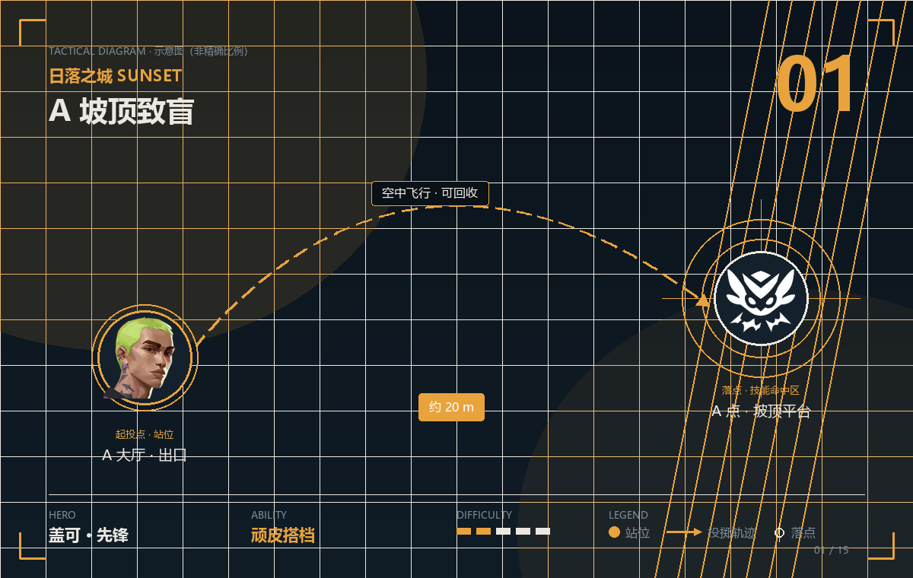
POINT 01 · 顽皮搭档
A 坡顶致盲
顽皮搭档 · 约 20 m · 难度
- 站位
- 站在 A 大厅出口的掩体后，放出搭档后立刻跟上。
- 瞄点
- 操控搭档飞向 A 点坡顶平台，让它在上方爆开致盲。
- 落点
- 坡顶的守方被致盲，队伍可以直接上坡。
- 时机
- 队伍集合完毕、准备进 A 点的瞬间。
提示 顽皮搭档打完弹匣后可以回收再用，回收路径会显示。别把它丢在原地浪费。

日落之城是标准的双包点地图：A 坡顶、B 市场两个宽开口，中路一条长街把它们连起来。这张图的点位节奏很快——开口宽，意味着「一次封堵」的价值远高于「精准单点」。
日落之城的 A 坡顶和 B 市场都是宽开口，盖可的顽皮搭档可以飞进去致盲，炫晕光波能直接把人从柜台后拽出来——他的道具还能回收，性价比是这张图最高的。

顽皮搭档 · 约 20 m · 难度
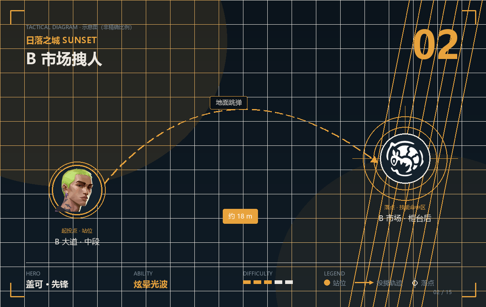
炫晕光波 · 约 18 m · 难度
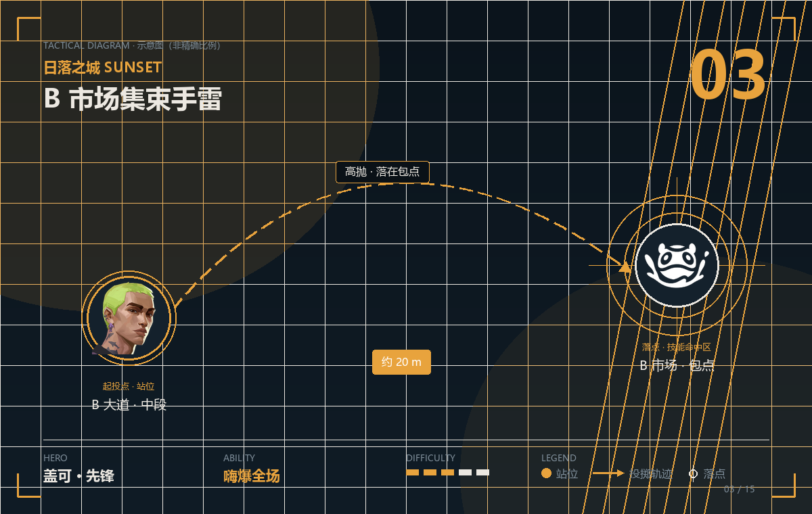
嗨爆全场 · 约 20 m · 难度
日落之城的守方极度依赖技能卡点，K/O 的零点嗅探可以直接把范围内的技能压制住——这是这张图最直接的反制手段，等于把对面的道具全部锁进抽屉里。
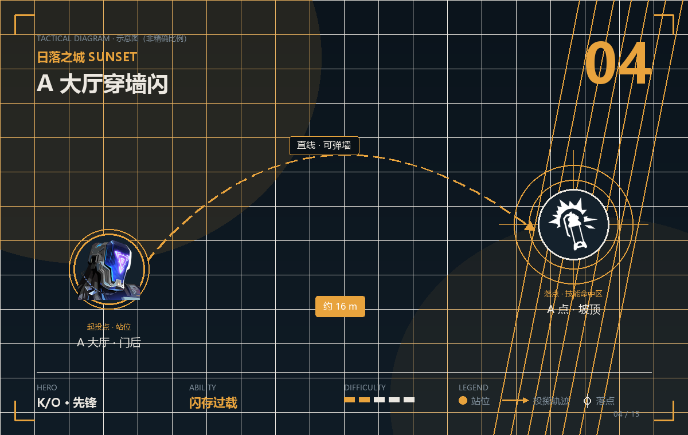
闪存过载 · 约 16 m · 难度
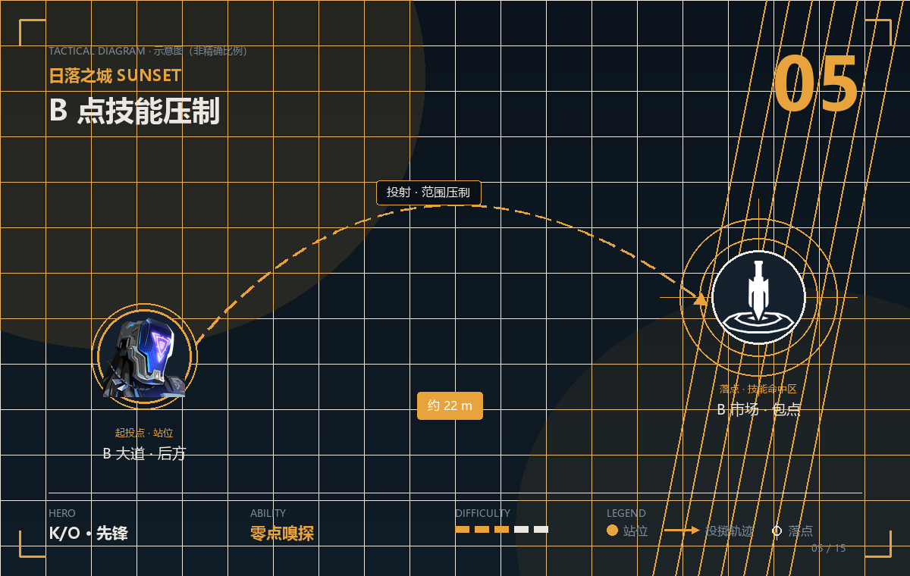
零点嗅探 · 约 22 m · 难度
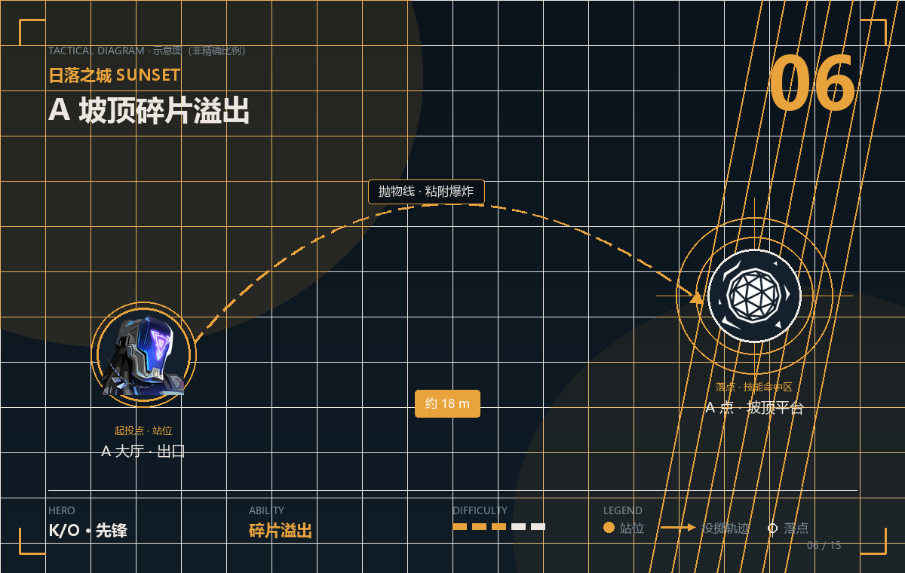
碎片溢出 · 约 18 m · 难度
迷核的声波帷幕是「地图选点」的烟，日落之城的三条主线都很长，隔墙放烟能同时封两个点——他在这张图的最大价值是「站在绝对安全的位置控场」。
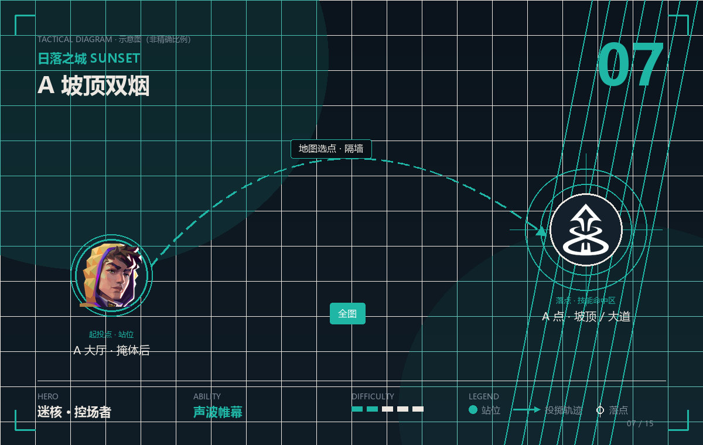
声波帷幕 · 全图 · 难度
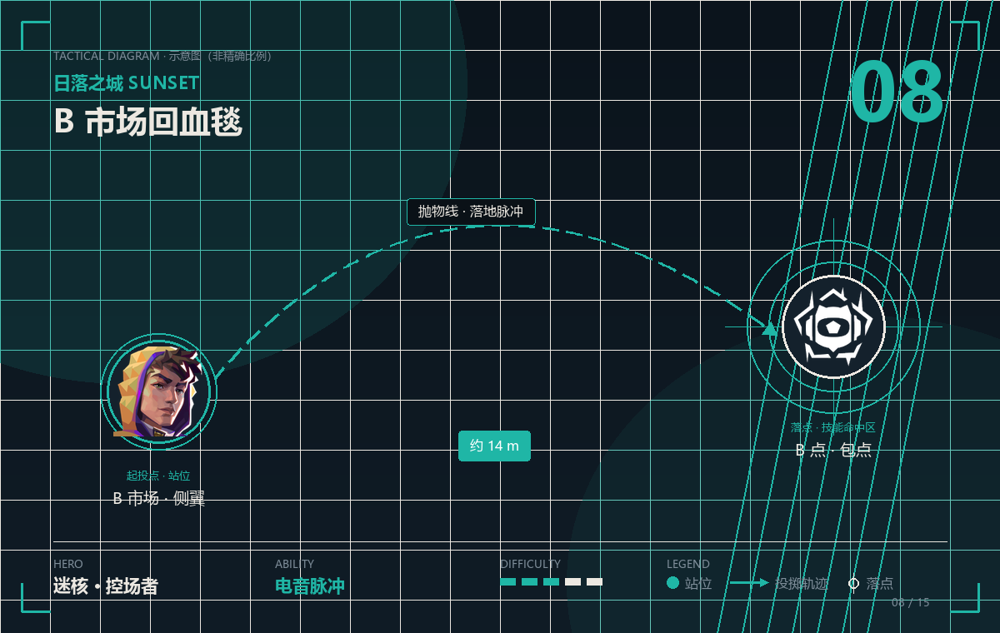
电音脉冲 · 约 14 m · 难度
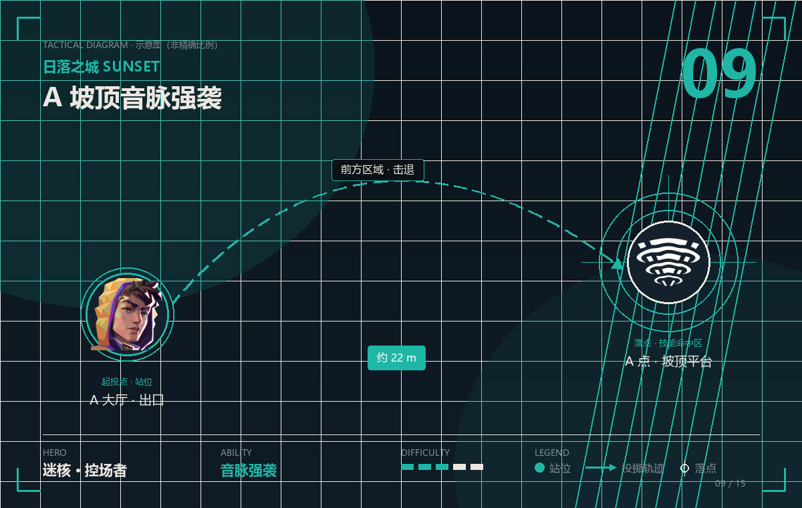
音脉强袭 · 约 22 m · 难度
遐思的灵光一念可以操控投掷物飞行，日落之城的 A 坡顶和 B 市场都有一堵高墙，正好可以绕过去闪——她的玩法核心就是「绕过高墙的那一下」。
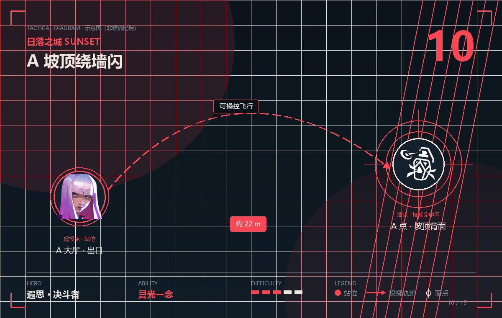
灵光一念 · 约 22 m · 难度
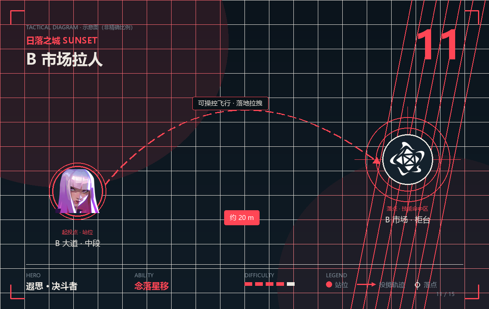
念落星移 · 约 20 m · 难度
日落之城的守方很依赖哨卫道具卡点，禁灭的噬源体可以直接把对面的装置全部清掉——她在这张图的作用，就是让对面的「守点体系」失效一整个回合。
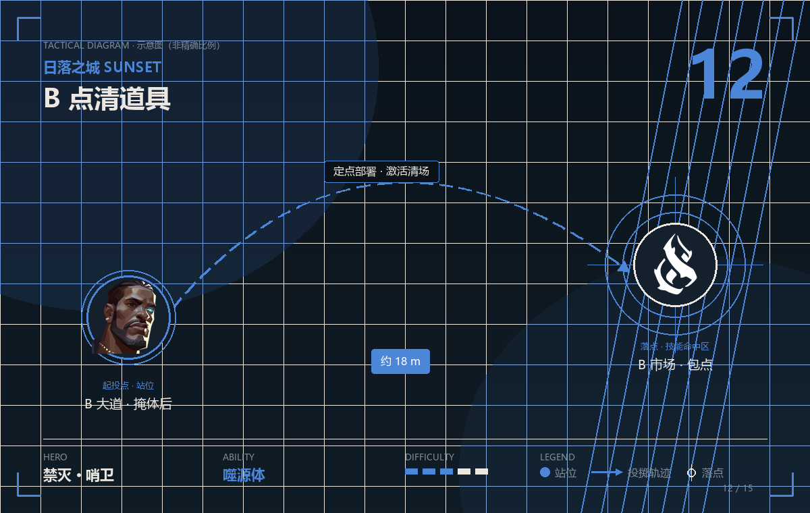
噬源体 · 约 18 m · 难度
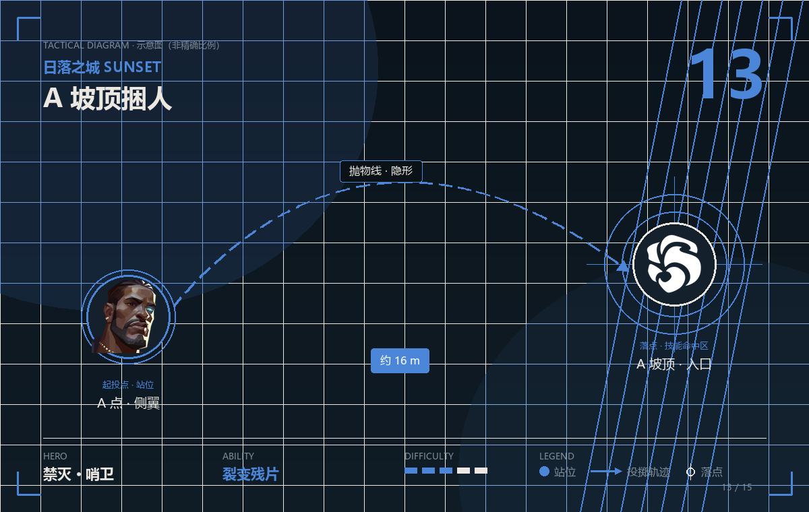
裂变残片 · 约 16 m · 难度
日落之城的 A 大道很长，幻棱的光速飞跃可以瞬间贴脸，是这张图最强的「入场」决斗者——她的点位不是「扔道具」，而是「把道具和位移串成一次进场」。
光速飞跃 · 约 30 m · 难度
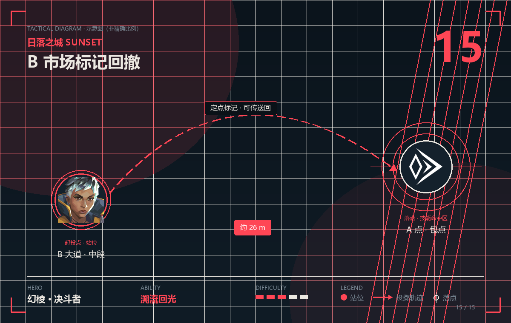
溯流回光 · 约 26 m · 难度